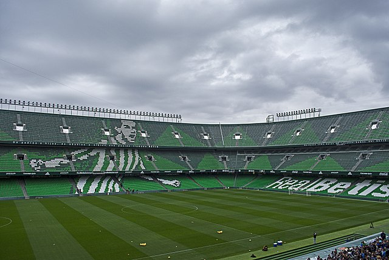

Seville, Spain
Located in Seville, you can find two stadiums. The more notable is where Real Betis Balompié, or more commonly known as Real Betis plays. Their roofless stadium, "Benito Villamarín," was built in 1929 and holds 60,270 supporters.
Also located in Seville, there is the stadium, "La Cartuja." This stadium was used when the city tried to bid for the summer olympics in 2004 and again in 2008. It is occasionally used for international soccer games when Spain faces off against other nations.